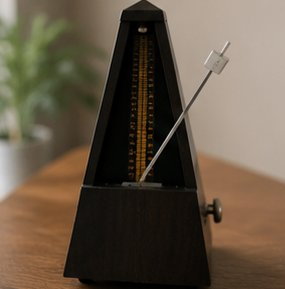
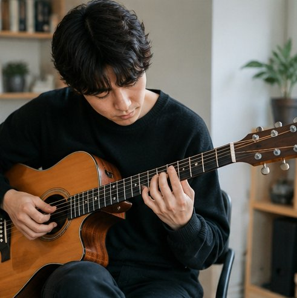
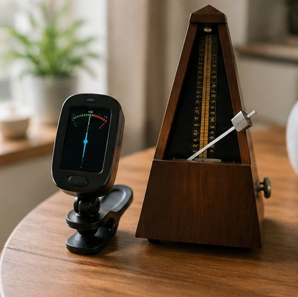
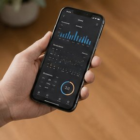
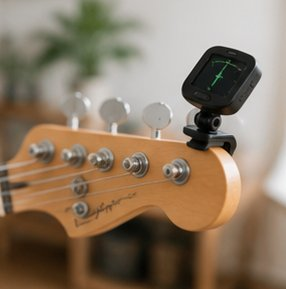

練習時間の可視化
日々の練習時間を積み上げグラフで表示。継続のリズムがひと目で分かります。
複数のデバイスで同じ記録にアクセス。スマホで記録、PCで分析もスムーズ。競合は有料、本ツールは無料。
練習に必要なメトロノームとチューナーを内蔵。アプリを切り替えずに記録と練習が完結します。
練習データをAIが分析し、あなた専用の上達アドバイスを提案。次に練習すべきポイントが分かります。
練習を「続けたくなる」仕掛けと、上達を実感できる可視化機能を詰め込みました。
日々の練習時間を積み上げグラフで表示。継続のリズムがひと目で分かります。
目標に対する達成度をリング表示。チャレンジモードでモチベーションを維持。
テクニック別の習熟度をレーダーチャートで分析。弱点が明確になります。
「もう一度練習」ボタンで前回と同じ内容を1タップで記録できます。

BPM調整可能なメトロノームと音程チューナーを標準搭載。
積み上げた練習記録や達成バッジを、SNSで仲間とシェアできます。
蓄積された練習ログをAI上達分析エンジンが解析。練習の偏りや停滞を検知し、次に取り組むべき課題をパーソナライズして提案します。

スマホ・タブレット・PCのどこからでも。クラウド同期で記録はいつでも最新の状態に。

練習を記録しはじめた方から、上達を実感する声が届いています。
「練習時間がグラフで見えるので、毎日続けるのが楽しくなりました。レーダーチャートで弱点も分かって効率的に練習できています。」

「メトロノームもチューナーも一体になっていて、これ1つで練習が完結。クラウド同期でスマホでもPCでも記録できて便利です。」

「AIのアドバイスで次に何をすべきかが明確になりました。発表会前の計画づくりにも役立っています。無料なのが驚きです。」